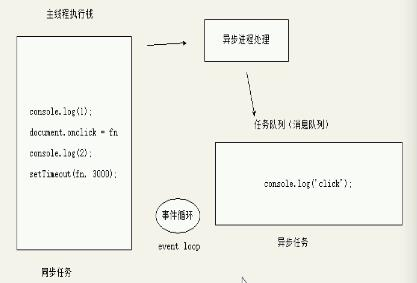
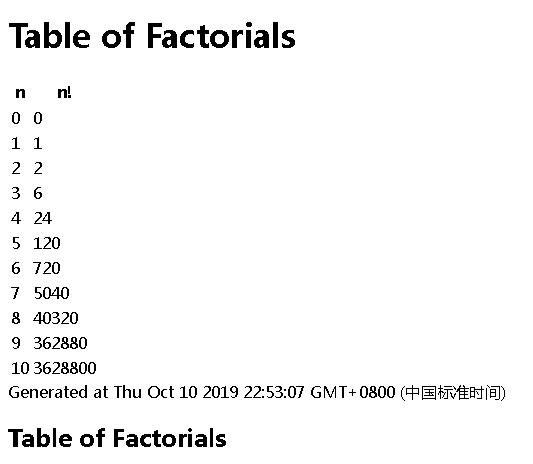
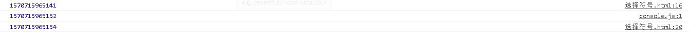
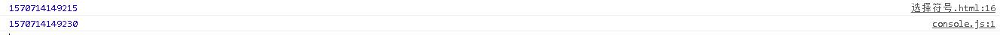
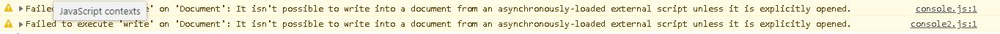

一.同步和异步的概念。
同步：即按代码的顺序执行任务。
在下列代码中，按照同步概念，则是先打印1后打印2。
1 console.log(1);
2 console.log(2);异步：即执行一个任务的同时执行另一个任务。如果按照此概念执行上面代码，则是同时打印出1和2。
二.客户端JavaScript中代码的执行顺序
首先，不管是核心JavaScript还是客户端JavaScript都不包含任何线程机制，只有一个单线程执行模型。单线程即指脚本和事件处理程序在同一时间只能执行一个，不能同时执行，没有并发性。（HTML5定义了一种为后台线程的“Web Worker”，本人不甚了解，不做赘述）。
单线程的好处在于编程更加简单，编写代码可以确保两个事件处理程序不会同时运行，操作DOM文档也不会担心有其他线程同时修改文档。但这也意味着JavaScript脚本和事件处理程序不能运行太久，否则会降低网页的可读性，甚至导致浏览器奔溃的假象。那么，一个JS程序是怎么具体执行的呢？
JS的执行任务分为同步任务和异步任务：
同步任务：指除了异步任务之外的其他程序。
异步任务：指各种事件（比如资源载入事件中的loaded、DOMContentLoaded中的回调函数，普通事件中的click，focus，mouseover中的回调函数，window对象的定时器setInterval、setTimeout中的回调函数等等）。
过程：一个js程序执行时，首先将同步任务放入一个执行栈中，先解析同步任务和异步任务并且按顺序执行所有同步任务。当异步任务被触发时（如用户点击鼠标或者按下键盘），异步进程处理则会检测到并将其对应的异步任务转移到任务队列中。同步任务全部执行完毕后，则查看任务队列中是否有未完成的回调函数，如果有则按顺序执行。在此后期间会不断查看任务队列并不断执行，形成事件循环。请看如下过程图

三、HTML文件中script标签的执行顺序和其属性defer、async产生的影响
1.在默认情况下，HTML解析器遇到script标签时，是先执行脚本，进入脚本并按上面所述的顺序执行完代码。然后再继续解析渲染HTML页面文档，这是对于内联脚本来说。但同样的，对于一个由src属性指定外部文件的脚本来说，也是先下载并执行该脚本。也就是说，在完成改脚本的下载和执行前，其后面的文档部分都不会显现出来（实际上DOM树已经被载入，但是没被解析为DOM树）。
以下一个1996最先进的JS代码可以证明该概念（当时没有那么多的异步事件API实现异步调用，所以用如下的同步程序来实现动态添加HTML元素）
1 <!DOCTYPE html>
2 <html lang="en">
3 <head>
4 <meta charset="UTF-8">
5 <title>Document</title>
6 </head>
7 <body>
8 <h1>Table of Factorials</h1>
9 <script>
10 function factorial(n) { //用来实现阶乘的函数
11 if(n <= 1) return n;
12 else return n * factorial(n-1);
13 }
14
15 document.write("<table>"); //开始创建表格
16 document.write("<tr><th>n</th><th>n!</th></tr>"); //创建表头
17 for(var i = 0;i <= 10;i++) {
18 document.write("<tr><td>" + i + "</td><td>" + factorial(i) + "</td></tr>"); //输出十行表格
19 }
20 document.write("</table>"); //表格结束
21 document.write("Generated at " + new Date()); //输出时间戳
22 </script>
<h2>Table of Factorials</h2>
23 </body>
24 </html>以下为结果图：

可以得知，脚本的执行在默认的情况下是同步和阻塞的，这是由其单线程模型决定的。但是，对于使用src引入外部文件的script标签来说，其属性defer和async可以改变这种情况，实现异步调用
2.对于外联脚本（即由src属性引入外部js文件的脚本），其有两个属性可以改变同步状态——defer和async（只要有这两个属性之一即为异步脚本）
defer（延迟）：有了该属性的外联脚本会延迟解析执行，即等待文档的载入和解析完成并可以操作时（不包括img，即可以理解为DOMContentLoaded事件触发时）才解析执行。看以下代码：
1 <!DOCTYPE html>
2 <html lang="en">
3 <head>
4 <meta charset="UTF-8">
5 <title>Document</title>
6 <style type="text/css" media="screen">
7 div {
8 width: 100px;
9 height:100px;
10 }
11 </style>
12 </head>
13 <body>
14 <script type="text/javascript" src="console.js" defer></script>
15 <script type="text/javascript">
16 console.log(+new Date());
17 </script>
18 <script type="text/javascript">
19 document.addEventListener("DOMContentLoaded",function(){
20 console.log(+new Date());
21 });
22 </script>
23 </body>
24 </html>console.js的代码为：
1 console.log(+new Date());运行结果截图：

可见，带有defer属性的console.js代码是第一个内联js执行后最后一个内联js执行前才执行的，印证了以上说法
async（异步）：HTML解析器在遇到带有该属性的脚本时，不会中止页面文档的解析，而是一边下载该脚本一边继续后面文档的解析，一旦脚本下载解析完成则尽快停止文档解析并回去解析执行该脚本，从而避免了下载脚本时阻塞文档解析，可以凭此提高文档解析加载速度。看以下代码：
1 <!DOCTYPE html>
2 <html lang="en">
3 <head>
4 <meta charset="UTF-8">
5 <title>Document</title>
6 <style type="text/css" media="screen">
7 div {
8 width: 100px;
9 height:100px;
10 }
11 </style>
12 </head>
13 <body>
14 <script type="text/javascript" src="console.js" async></script>
15 <script type="text/javascript">
16 console.log(+new Date());
17 </script>
18 <div>
19
20 </div>
21 </body>
22 </html>结果截图：

可以看出，原本按照默认方式应当先打印的console.js文件反而在内联script标签之后执行，可以印证上面所述。
那么，如果两个属性都同时拥有呢？这样的标签会按照什么方式执行？答案是浏览器会遵从async属性并忽略defer属性。
注意点：
1.拥有这两个属性的script标签的js文件即为异步脚本，异步脚本不能使用document.write（）（因为如果用该函数会覆盖掉其对应标签解析之前的文档内容）；如下面代码：
1 <!DOCTYPE html>
2 <html lang="en">
3 <head>
4 <meta charset="UTF-8">
5 <title>Document</title>
6 <script type="text/javascript" src="console.js" defer></script>
7 <script type="text/javascript" src="console2.js" async></script>
8
9 </head>
10 <body>
11
12 </body>
13 </html>其中console.js和console.log2代码都为：
1 document.write(1);结果截图：

2.defer和async都是布尔属性，没有值，只要出现即能激活该属性
3.defer和async都只适用于外联脚本，内联脚本使用这两个属性是无效的。
4.defer能访问完整的文档树，无论其脚本位置在何处；而async必定能看到其脚本所在位置之前的文档树，但是可能或不可能访问其后面的文档内容。
四、客户端JavaScript执行顺序的总结
JS程序的执行有两个阶段
第一阶段：解析载入HTML文档的内容，并执行<script>元素里的代码（包括内联脚本和外部脚本），通常按其出现顺序执行。除非出现defer、async属性使其成为异步脚本（详情见上面defer、async属性的说明）
第二阶段：这个阶段是异步的，而且是由事件驱动的（即有用户事件才会发生）。在这个阶段，一旦用户产生事件，浏览器就会调用之前脚本中的事件处理程序函数，来响应异步发生的事件（如鼠标单击，键盘输入。此时对应的事件处理回调函数被放在了任务队列中，详情见第二部分）
我们对这两个阶段再进行详细的划分，形成一条理想的时间线：
1.Web浏览器创建一个Document对象，并开始解析渲染HTML文档，生成Element对象和Text节点放入文档中。此时，document.readystate的值为“loading”。
2.当解析HTML文档过程中遇到没有async和defer属性的脚本时，解析器停止解析文档并开始按顺序对脚本进行解析执行，此时脚本内可以便利和操作脚本之前的文档树。解析完遇到的脚本后则继续文档的解析，以此类推
3.如果遇到带有async属性的脚本，浏览器会一边下载该脚本一边继续后面文档内容的解析，当脚本下载解析完毕后立即返回解析执行该脚本。
4.当文档完成解析时，此时document.readystate的值为interactive
5.然后按照其出现顺序继续解析执行带有defer属性的脚本
6.所有的文档和脚本加载执行渲染完成后（不包括外部加载的图片多媒体文件等）浏览器触发了Document对象的DOMContentLoaded事件，标志着程序执行从同步脚本执行阶段进入到了异步事件处理事件程序执行阶段。注意此时可能还有异步任务还没执行完成。
7.此时，文档已经完全解析完成，但是有一些内容还在加载，如图片。当这些内容完全加载并且异步脚本全部载入和执行后，document.readystate的值为“complete”，并且触发window.onload事件。
8.此刻起，调用异步事件，以异步响应用户输入事件。
注意：这是一条理想的时间线。DOMContentLoaded事件和document.readystate属性大部分浏览器都支持。defer属性也被大部分浏览器支持。而async在IE9及其之前的版本是不支持的。